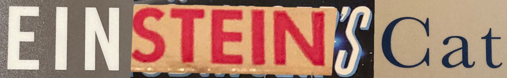
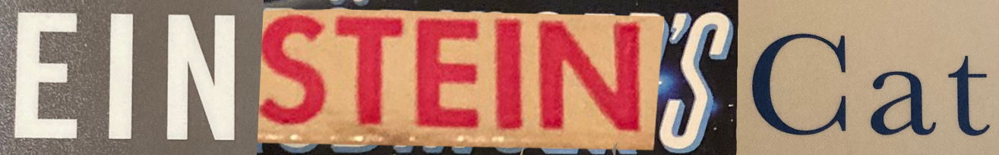

and Other Meditations on Space, Time and Causality
by Kent Heiner


and Other Meditations on Space, Time and Causality
by Kent Heiner
If the night sky is a source of wonder for you, this book might be for you. If, when you look up at the night sky, you pause to think about the different relative ages of the light coming from each far-distant star, and start to wonder about the very nature of time and space, this book is probably for you. The constellations as we see them are a matter not only of the relative direction of the stars from our standpoint, but of their distances as well, which affects the apparent synchrony of events in the heavens. The night sky as viewed from earth is a show that no one sees but us.
Come with me for a moment, in your imagination, to Lime Kiln State Park on San Juan Island. In the northwest corner of the United States, Lime Kiln looks westward over the water at Canada's enormous Vancouver Island. In that water, if you come at the right time, you may catch a glimpse of the area's resident orca whales. They are large enough to be seen from a distance of several hundred yards even when little more than their black dorsal fins rise into view above the water's surface. Sometimes a spray of water from atop their head will accompany the sound of rushing air preceded by a dull thud, but over larger distances the sight precedes the slower-traveling sound, and the two are less synchronized. When this sound reaches us depends not only on when it happened but also on how far away its source is. In such circumstances, we might realize that the sequential order in which we experience events on the water depends on our vantage point, just as with the stars in the night sky. As above, so below. And we might start to wonder more pointedly about the nature of time, space, and reality itself.
Above left: Orcas of J pod, the resident whales that frequent the waters near San Juan Island. Right: The lighthouse at Lime Kiln State Park, with Vancouver Island seen in the distance. Source: Wikimedia Commons (click links for licensing information).
Again and again in physics, we see the role played by vantage point or perspective in our experience and our measurements. "Perspective" will be a recurring theme in this book, and was its working title for many years.
There have been many proofs of Einstein's theory of relativity over the hundred years since it was finalized, but perhaps the most astonishing has to do with the satellites that support the Global Positioning System, or GPS. Just as Einstein's theory predicts, time passes more rapidly at the satellites' altitude, and if the engineers who designed GPS did not take this fact into account, the system would rapidly lose its accuracy. Shocking as this idea may seem, by the end of this book the reader should be able to see the logical consistency of it.
The purpose of this book is to explain the mechanics of physical reality to a general audience, to the fullest extent possible. I have had a lifelong fascination with modern physics as well as a longstanding love-hate relationship with the process of learning it. I enrolled in an introductory course in relativity and quantum theory during my freshman year of college, but dropped the class almost immediately, finding that it had more math prerequisites than I was led to believe. It could be said that classical physics deals with sizes and energy levels that are within the realm of our day-to-day experience, while modern physics deals with higher energies and things that are either larger or smaller than we typically interact with. My more specific intention with this book is to bring modern physics, namely relativity and quantum theory, to a broader audience and to correct some popular misconceptions of it. My hope is that innovative use of visual learning aids will make this possible, also recognizing the needs of those whose sight is impaired.
I can hear you asking, "But really, don't we already have too many books about relativity and/or quantum theory?" I get it. I have read piles of general-audience books about physics, and I can say with great confidence that you are unlikely to see anywhere else what I am going to show you here. I'm not expecting to advance theoretical physics here per se, just to make the teaching of it easier, to pull the mystery out of spacetime, and to call out the recurring nonsense that real science so often comes packaged with, even from respectable scientists. In Ron Garret's fascinating presentation on quantum entanglement, he refers to his comments as the things that they don't want you to know, "they" being the many authors who produce book after book in an apparent conspiracy to convince you how incomprehensible modern science is. That is the opposite of what I am here to do.
This book is partly my presentation to you of some interesting things I have noticed, and partly my process of sorting out what I have read by trying to explain it. As the ancient Romans might have put it, docendo discimus; in teaching, we learn. There is beauty in the math and geometry of physics. I have every expectation of providing the reader with moments of awe and wonder, but never by misrepresenting the science. I am not here to start you wondering what secrets may be held in mysterious unknown dimensions; quite the opposite, in fact. I will encourage the reader to think less of time as a fourth dimension and I hope to better prepare anyone (who might be so inclined) to do the math related to what goes on in the three dimensions we know best. I'm not an expert on the science itself as subject matter, but I can say that my experience in seeing the ways that it is taught is pretty extensive. I have been badly misled at times by authors who knew better, and this has unnecessarily set me back in my learning process; I am determined to do better as a writer.
When discussing the problem of presenting a difficult subject to a general audience, Einstein wrote:
Either [one] succeeds in being intelligible by concealing the core of the problem and by offering to the reader only superficial aspects or vague allusions, thus deceiving the reader by arousing in him the deceptive illusion of comprehension; or else he gives an expert account of the problem, but in such a fashion that the untrained reader is unable to follow the exposition and becomes discouraged from reading any further. If these two categories are omitted from today’s popular scientific literature, surprisingly little remains. But the little that is left is very valuable indeed.
It seems not much has changed since Einstein's time. So much writing about physics for general audiences is pseudo-sci-fi or mystical woo-woo on one hand, or people who are hoping too much that the equations will speak for themselves on the other hand. Wikipedia's virtues are many and great, but for me its most frustrating shortcomings are found in the math and science articles, which seem to be written more as a refresher for those who are already deeply familiar with a topic than as a primer for those who wish to learn; in place of readily understood language, there are hyperlinks to other equally opaque articles. There's precious little skillful and detailed explanation to be found anywhere, and maybe that's a matter of supply and demand, but I am going to publish this and see who it helps.
I don't remember who said it first, but it has almost become an aphorism that equations hurt book sales. Maybe that's true. But trying to write about physics using equations only when unavoidable is like trying to make a book about Shakespeare's plays without using very many words; no matter the depth conveyed by pictures, such a book would be unavoidably superficial. Like any modern guide to Shakespeare, I have done my best to provide a guide to unfamiliar terms for the reader, but really there's no beating the language that physics truly belongs in. So I have included the math for those who have the background to appreciate it, while doing my best to provide accurate translations.
It is said that math is the native language of science, and that is truer nowhere else than in the subjects that are the primary focus of this book, which are called "mechanics" by physicists. The math of classical mechanics is easy to translate into stories, which are an important way that we human beings relate to the world. The math of quantum mechanics, on the other hand, seems to defy our efforts to assign a coherent story to it (I also very briefly considered calling this book Story Problems, which I would have found very droll, but it would have hindered the effort of finding an audience). I expect to remedy that situation at least a little bit here, as I show what I see as the intimate connections between quantum theory and relativity. As I have organized my thoughts to make this book, my role as a storyteller has become more clear, even though this is a nominally nonfiction work. That realization has been both inspirational and cautionary; I am excited about bringing meaning to the math, but I don't want to tell any stories that are both untrue and unenlightening. So I have set down guidelines for myself to keep the math close at hand during the writing process, to consult it regularly, and share it to the extent that I think the reader may understand it. With these guidelines, I am confident that I am less likely to go astray in ways I have seen myself and other writers do in the past. And the reader should keep in mind, as I try to do, that the math is usually closer to the truth, even if it is only our best approximation of it. The stories are just stories. Both the stories we tell about the world and the math we have used to describe it have changed over the centuries as we have noticed things happening in more predictable, quantifiable ways rather than at the whims of nature or deity.
In telling these stories, some of which I have concocted myself, I will be taking liberties with some of history's great thinkers, placing them in fictional situations or borrowing the characters that they created to tell their own stories. One such thinker, Zeno of Elea (490-425 BCE) described several paradoxes which get to the heart of our conceptions of time and space. His first appearance here will be alongside Alice of Through the Looking-Glass, whose adventures are well-known (Lewis Carroll, the book's author, will be mentioned multiple times here). Alice's aplomb in the face of the strange, mysterious, and even absurd should serve us well, and her stories will serve as excellent metaphors. As to the heritage and rich history of other characters in this book, it will often please me to let readers make these discoveries on their own.
Finally, I want to emphasize that my intent is to address audiences at
many different levels of familiarity with math and physics. It is my hope
that everyone will find something of value here, even if it means seeing
familiar things in new ways. I also fervently hope that I can convince
most readers to keep going forward, knowing that some of the things I say
will go over their heads for now, being aimed at another part of the
audience having some level of understanding which they themselves have yet
to attain. Skip over what you must, reread what you wish to, and by all
means please do return after consulting other sources. I will try to place
signposts where the grade gets a little steep and where there are
alternate paths through the text. I hope the journey is enjoyable.
(Image above licensed by Wikimedia Commons. Click image above to enlarge;
click link here for license details).
I wish to thank everyone who has been kind enough to listen to me ramble about these ideas as they have developed, especially my family and friends. I am grateful to the Everett Writers Group for their feedback on some of this material. I remember the Burlington-Edison High School faculty with fondness: Monte Bianchi taught me perspective drawing; Reggie Nelson taught me geometry and calculus; and Dave Trout taught me chemistry and physics. The late A. A. Broyles patiently answered some of my early questions about relativity when he visited the office where his daughter and I worked. Cathy Plesko is both a friend and an inspiration, raised in the same tiny little town as me and now tackling problems like how to save the Earth from meteor strikes; her feedback has helped me along my way. Kelley Russ, whose article appears in the bibliography, was highly influential on my thinking, and I am grateful for his words of encouragement. The same is true of Ron Garret, who may be the first person to show me that quantum physics can make any sort of sense. Walter Lewin (MIT), Kenneth Lang (Tufts), Edwin Taylor (MIT) and David Nielsen (BYU) have likewise graciously responded to questions I have sent them by email. Murray Bourne (intmath.com) gave me some helpful hints on the use of three.js, which I have used to make some of this book's animations.
Speaking of which, I continue to be amazed at the free and open source resources made available by countless contributors, many of whom are anonymous. I would like to thank the people behind three.js, gnuplot, FireAlpaca, Wikimedia, and Wikipedia. Many of the illustrations you will find here are made available under the Creative Commons 3.0 license, the terms of which you will find in the links provided and here. Any such illustrations which I have modified for my purposes are available to you under the same terms. Wikipedia is a modern marvel, with staggering amounts of free expertise and lucid thought. Most of the content of chapter thirteen has been lifted right out of Wikipedia, and rather than apologize, I think it is more fitting to give an endorsement. MIT's OpenCourseWare program is a national treasure. The 3blue1brown and eigenchris YouTube channels have been particularly helpful and inspirational. Last but not least, I wish to thank the Khan Academy and Sal Khan in particular for being such an amazing resource; I can't think of any better way for an independent learner to get instruction on many topics in math and physics (and more).
The beginning of the 20th century was a revolutionary time in physics. Relativity and quantum theory have changed the way we think about space and time, cause and effect, and reality itself. One of Albert Einstein's scientific papers published in 1905 introduced his theory of relativity, and another paper that same year contributed to another theory which would come to be known as quantum mechanics.
Of all the ideas surrounding quantum theory, the best-known is the thought experiment known as "Schrödinger's Cat." As it became clear that physical processes on the smallest scales could not be measured without disturbing them, physicists began talking about the minimum level of uncertainty inherent in such systems. In the midst of this, Erwin Schrödinger became uncomfortable with the direction that scientific thought was taking. Just because a property of a system is not measurable, he asked, can anyone really be justified in saying that the system has no such property? Because Danish physicist Niels Bohr was among those who insisted that such was indeed the case, this way of thinking became known as the Copenhagen interpretation of quantum theory. In 1935, to make his objections to the Copenhagen interpretation clear, Schrödinger presented Einstein with a thought experiment.
Wikipedia summarizes his idea well: "A cat, a flask of poison, and a radioactive source are placed in a sealed box. If an internal monitor (e.g. Geiger counter) detects radioactivity (i.e. a single atom decaying), the flask is shattered, releasing the poison, which kills the cat. The Copenhagen interpretation of quantum mechanics implies that, after a while, the cat is simultaneously alive and dead. Yet, when one looks in the box, one sees the cat either alive or dead, not both alive and dead. This poses the question of when exactly quantum superposition ends and reality resolves into one possibility or the other."
The idea of the cat being both alive and dead was never meant to be taken seriously. It was a reductio ad absurdum argument against the Copenhagen interpretation, following Bohr's philosophy to its most ridiculous consequence. But it caught hold of the popular imagination: from Robert Anton Wilson's Schrödinger's Cat sci-fi trilogy, to a popular-science bestseller by John Gribbin called In Search of Schrödinger's Cat, to countless internet memes, this is the cat that will never truly die.
In one hundred words or less, quantum theory is a theory about very small things; it is also considered a formal and precise way of describing the limits of how much information one physical system (an observer, for instance) can contain about another (the thing being observed). Whether it's the position and momentum of a subatomic particle or the decay of a radioactive isotope, we have to deal in probabilities rather than precise certainties.
Though we haven't yet come around to thinking that way, the theory of relativity implies a degree of uncertainty in the physical world as well, due the the limits on how fast light is capable of transmitting information between one physical system and another. To convince you that this is so will take quite a lot of explanation; but for now, consider the following story, which may or not be true:
It is 1935 and Albert Einstein has emigrated to the United States; he is a Jew essentially having lived in self-imposed precautionary exile since the Nazi Party took over his home country of Germany in 1933. On this otherwise unremarkable day, Einstein is visited at Princeton University by the anti-Semite industrialist Henry Ford, an admirer of Hitler who Einstein suspects has come to discourage him from again speaking out against Hitler's regime. Ford's reason for the social call, he says, is that he wishes to hear from Einstein's own mouth "the fundamental meaning and essence of your theory of relativity." Einstein takes Ford on a stroll through the woods near campus. After checking his watch, he begins his explanation of relativity by telling Ford that he received an ominous telegram that morning just before Ford arrived in Princeton. Back home in Dearborn Michigan, for reasons which are unclear and unimportant, a German agent has placed Ford's house cat in a sealed box. In this box are an alarm clock and a flask of poison gas. When the clock strikes noon, its alarm mechanism will shatter the flask, releasing the poison and killing the cat. "Mr. Ford," Einstein continues, "It is now three minutes before twelve o'clock. It is over six hundred miles to Dearborn by car. It is a ten minute walk to the nearest telephone, and perhaps five minutes of running may get you there. There is nothing within your power to save your cat from its fate. You will never see nor hear it alive again. If I can assure you that the situation is precisely as I have described it, is there any strict sense in which your cat is not already dead?"